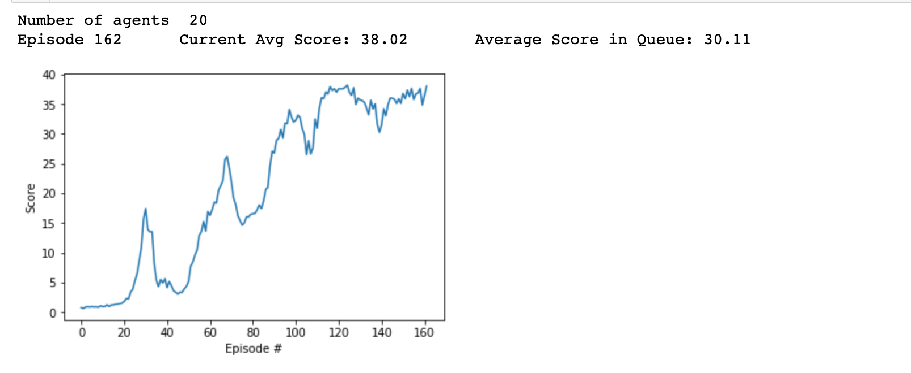

DQN picks buttons. DDPG turns dials.
DQN's world is buttons. The banana agent had four: forward, back, left, right. Score every move, pick the biggest, done. That works beautifully when the menu is short.
But here is the question that breaks it: how hard do you twist the shoulder joint? Not which button. How much. A torque is any real number between -1 and 1, and there are infinitely many of them. You cannot argmax over infinity. I hit this exact wall in my RF-DDPG repo, where a double-jointed arm has to hold its hand on a floating target in a Unity ML-Agents task. So this page is the fix: an actor that outputs the move directly, and a critic that judges it.
A quick note on what is toy and what is real, before we start: the interactive toys on this page are from-scratch JavaScript re-enactments at toy scale, labeled as toys where it matters. The environment facts, the network sizes, the hyperparameters, and the training curve come straight from my RF-DDPG repo. I will tell you which is which every time.
Before any algorithm, meet the patient. The Reacher environment is a double-jointed arm bolted to a table: one segment driven by the shoulder, one by the elbow. Floating somewhere in reach is the target, a small glowing ball. The job is dead simple to state and vicious to execute: keep your hand on the ball. Not touch it once and celebrate. Hold it there, trembling as little as possible, for a whole episode.
What does the arm know about itself? Thirty-three numbers, fresh every step. The README describes them as position, rotation, velocity, and angular velocities of the arm. In plain terms: how bent each joint is, how fast it is swinging, where the segments are, and where the target sits. That is the arm's proprioception, its sense of its own body. Close your eyes and touch your nose. You just ran the same computation on your own private 33 numbers.
Here is the strange part: the agent never sees the arm. No camera, no picture, no 3D view. It sees 33 numbers, emits 4 numbers, and gets a number back. The arm you are picturing, the glowing ball, the table, all of that exists only in the physics simulation and in your head. The agent lives in a world made of vectors. Everything it ever learns about "holding the ball" is encoded as patterns across those 33 inputs. When the toy arm on this page flails and then steadies, what you are watching is a vector-world policy getting its patterns right.
What can it do? Four torques, one dial per joint axis, each any real number from -1 to 1. Full twist one way is 1, full twist the other is -1, and every value in between is a legal move. That is the continuous action space: infinitely many settings for four dials, recomputed every single step.
Episodes run a fixed number of steps. Every step the hand spends touching the target pays +0.1. Every step anywhere else pays 0. The episode score is the total. No style points, no partial credit for looking graceful. Touch the ball, get paid.
Now the part that made my run possible. I did not train one arm. I trained twenty identical arms in parallel, in the same Unity build, and averaged their scores. Twenty arms flailing, twenty arms improving, twenty arms filling the replay buffer with experience. The environment counts as solved when that average crosses 30 over 100 episodes. At +0.1 a step, 30 points means holding the target for roughly 300 steps per episode, on average. That is the bar. Not touching it. Keeping it.
Why is this hard? Three reasons. First, the reward is sparse in time: most steps pay 0, and the +0.1 steps only arrive when the whole chain of torques was right. The agent has to figure out which of hundreds of past torque commands earned each +0.1. That is the credit assignment problem, and it is brutal here. Second, the dynamics are smooth: a slightly wrong torque does not fail loudly, it just drifts the hand a millimeter off. There is no crash to learn from, only a slow leak of reward. Third, the arm never starts in the same pose twice, so memorization is useless. The policy has to generalize: from any 33-number state, emit the four torques that hold the ball.
Two episodes, same arm. Early in training: the hand scribbles wild circles, brushes the ball for a handful of steps, and the episode ends with a score under 1. Late in training: the hand glides to the ball, parks, and a small tremor keeps nudging it off and back on. Hundreds of steps on target, score in the high 30s. Same arm, same physics, same task. The only difference is the numbers inside two neural networks. That is what this page is about: the algorithm that rewrote those numbers.
A word on where the pieces live. The Unity build runs the physics: the arm, the ball, the +0.1 ticks. The Python side runs the networks: the actor, the critic, the replay buffer, the updates. Twenty agents live inside one Unity scene, each an independent arm, and the Python loop collects all twenty streams of experience at once. When people say "20 parallel agents," that is what they mean: one simulation, twenty arms, one shared brain being trained.
DQN's whole trick is one line: pick the action with the biggest Q value, the argmax of Q(s, a). With four banana buttons that is trivial. With four torque dials, each a real number in [-1, 1], the argmax is over an infinite set. There is no biggest one to pick. The trick does not survive contact with dials.
You cannot dodge this by chopping the dials into buttons. Split each torque into 10 notches and you get 10,000 combos, and the Q-table drowns in the curse of dimensionality. Worse, you throw away the precision the task wants: the difference between 0.61 and 0.62 on the elbow can be the difference between holding the ball and missing it. Finer buttons are not the answer. No buttons at all is the answer.
This is exactly the gap the DDPG paper (Lillicrap et al., 2015, "Continuous control with deep reinforcement learning") set out to close. It takes DQN's machinery, the Q-network, the replay buffer, the target network, and bolts on an actor that outputs continuous actions directly, trained with the deterministic policy gradient. If DQN is the ancestor, DDPG is the child that learned to use its hands.
There is a deeper reason the actor matters, beyond "argmax is impossible." Even if you could search torque space perfectly at every step, doing that search in real time, dozens of times per second while the arm is moving, would be absurd. The actor amortizes the search: it pays the cost once, during training, and compresses the answer into a fast forward pass. At test time there is no optimization loop, no search, no argmax. State in, torques out, microseconds. That is what "policy" means here: the search, distilled.
And if you are wondering what DQN would actually do if you forced it onto this task: it would discretize, build a Q-table over thousands of torque combos, and spend its whole training budget visiting each combo once. The left panel of the toy below shows the honest version of that idea at tiny scale. Four buttons, fine. Four dials, hopeless. The comparison is the point.
DDPG splits the job in two. The actor is a policy network: it looks at the state and emits the torques directly, $a = \mu(s)$. No argmax anywhere, no menu, just four numbers out. The critic is a Q-network: it looks at a state-action pair and scores it, one number out. The actor proposes, the critic judges, and the actor listens.
The wiring comes straight from the repo. My actor takes the 33 observation numbers in, runs them through layers of 256, 128, and 64 units, and outputs 4 torques through a tanh. The tanh is doing real work: it squashes every output into [-1, 1], exactly the dials' range, so the network physically cannot ask for an impossible torque. My critic wires the action in late: the 33 state numbers go through a 256-unit layer first, and only then do the 4 torques join in, 256 + 4 = 260 numbers into the next layer, through 128, 64, and out comes a single Q value. State alone feeds the actor. State first, action after, feeds the critic. That asymmetry is the whole architecture: one network moves, the other evaluates the move.
One forward pass, toy numbers. The state comes in: shoulder angle 0.3 radians, elbow spinning at -1.2 radians per second, hand at (0.41, 0.18), target at (0.44, 0.20), and 29 more numbers in the same spirit. Through 256, 128, 64, the tanh squeezes the four outputs into [-1, 1]: say [0.62, -0.31, 0.15, -0.44]. Those four numbers go straight to the arm. Then the critic runs those same 33 numbers through its first 256-unit layer, adds the 4 torques to the 256 outputs, and returns a single number: 12.4. That is the critic's honest opinion of the move. The actor's entire education is learning to emit torques that make that number bigger.
One word in the name deserves attention: deterministic. The actor outputs one action per state, the same torques every time, no dice involved. The alternative is a stochastic policy, which outputs a distribution over actions and samples from it. Stochastic policies explore for free, but they are jittery: sample twice, get two different torques. For a physical arm that should hold still, jitter is the enemy. DDPG chose determinism and bought its exploration separately, with noise added on top. That is a design decision, not a law of nature, and later algorithms made different trades.
Why tanh on the actor's output instead of just clipping the numbers afterward? Clipping is a wall: gradients die at the wall, and the network never learns that it is pushing too hard. Tanh is a slope: it is smooth everywhere, gradients flow through it, and the network learns to live inside [-1, 1] instead of being dragged back inside. Smooth constraints beat hard walls when you are training with gradients.
How big are these networks? Small, by modern standards. The actor is roughly 50,000 parameters: 33×256 plus biases, then 256×128, 128×64, 64×4, plus biases at each layer. The critic is about the same, roughly 51,000. Together just over 100,000 parameters, plus their slow-copy twins. A hundred thousand numbers is what stands between flailing and holding the ball.
The critic learns the same way DQN's Q-network did: a Bellman backup. Its guess versus a target built from the reward plus the discounted future, with squared error because big mistakes should hurt more than small ones. Here it is, term by term:
Notice what the critic never does: it never picks an action. It only judges pairs. Judging is easy. Choosing is the actor's problem, and the actor has a clever way to cheat off the critic's homework.
Let us run one training update by hand, with toy numbers standing in for the real ones. A transition comes out of the replay buffer: some state, the four torques the actor tried, the reward, the next state.
The critic scores the move you made: Q(s, a) = 11.9. The target actor picks torques for the next state, the target critic scores them: Q'(s', μ'(s')) = 12.4. The reward for this step was +0.1, the hand was on the target, and γ = 0.99. The target value is r + γQ' = 0.1 + 0.99 × 12.4 = 0.1 + 12.276 = 12.376. The error is 12.376 - 11.9 = 0.476. Square it, backpropagate, and the critic's weights shift so next time it guesses a little closer to 12.376 for this kind of move. That is the whole Bellman backup: one subtraction, one square, repeated a few million times.
Now the actor's turn, same transition. Freeze the critic. The actor's current torques are [0.62, -0.31, 0.15, -0.44]. Ask the critic: which way should the first torque move? The gradient of Q with respect to that torque is, say, +0.03. Positive, so a slightly larger first torque scores slightly higher. The actor's weights shift so its output moves a hair in that direction, and the same for the other three torques. No target torques, no labels, no argmax. Just uphill.
Two warnings about these numbers. First, they are toy values I made up to show the arithmetic; the real Q values in the repo depend on the run. Second, one update does almost nothing. DDPG does this millions of times, over minibatches sampled from the replay buffer, with the target networks creeping along behind. Learning here is erosion, not lightning.
In the repo this never happens one transition at a time. Each update samples a minibatch of transitions from the replay buffer and averages the loss over all of them, so one weird transition cannot yank the networks around. The hand-computed update above is the atom. Training is the molecule: dozens of transitions per minibatch, hundreds of thousands of minibatches.
Here is the beautiful trick, the one this whole page exists for. The actor never sees a target action, so how does it learn? Freeze the critic for a moment and ask it a question: for this state, which way should these torques move to score higher? The critic is differentiable, so that question has an exact answer: the gradient of Q with respect to the action. Then shift the actor's weights so its torques slide a little in that direction.
Picture the critic as a landscape over torque space. Fix a state, and every torque setting sits somewhere on that landscape: valleys of low Q, hills of high Q. The actor's current output is a dot on it. The gradient points uphill. The actor steps uphill. Repeat a few hundred thousand times and the dot lives on the peaks. That is the deterministic policy gradient as one image: climb the critic.
Under the hood this is the chain rule doing the talking. The actor's weights produce torques, and the critic turns torques into a score. The update multiplies two sensitivities: how the score changes when the torques change, times how the torques change when the weights change. Read it as a sentence: move the weights in the direction that moves the torques in the direction that raises the score. Two links, one chain. That is the deterministic policy gradient theorem in plain English, and it is the only equation-shaped idea on this page besides the Bellman backup.
Why go through the critic at all? Why not just differentiate the real return with respect to the torques? Because the environment is not differentiable. The Unity physics that turns torques into hand positions is a black box: you can run it, you cannot take its gradient. The critic fixes that. It is a learned, differentiable model of "how good is this move," trained on real rewards. The actor climbs the model, and the model is kept honest by the Bellman backup. DDPG is a trick for doing gradient ascent through a world you cannot differentiate, by learning a differentiable copy of the part you care about.
Two things to notice. First, there is no argmax in this loop either. Nobody searches torque space. The actor follows the slope, like water finding the drain, except upward. Second, the actor can only climb a landscape worth climbing. If the critic's Q values are garbage, the actor confidently climbs garbage hills. That is why the Bellman backup above and the stabilizers below are load-bearing. A bad judge makes a confident fool.
There is a gotcha hiding in this pretty picture. Early in training the critic's landscape is mostly wrong: random weights, random opinions. The actor climbs it anyway, confidently, toward peaks that mean nothing. This is why the stabilizers below are not optional garnish. The slow target networks keep the landscape from shifting under the actor's feet, the replay buffer keeps the critic honest with diverse old experience, and the noise keeps the actor visiting new terrain. Climbing only works if the hill is real and you keep exploring the map.
DDPG stands on three pieces of scaffolding. Skip any one and you get an arm that spins in circles. The repo taught me each of these the hard way.
Slow target networks. $Q'$ and $\mu'$ are copies of the critic and the actor, blended in with $\tau = 0.001$. Each update moves every target weight 0.1% of the way toward the live network's weight. Why so slow? The critic's target is built from the critic's own predictions. If those predictions move fast, the target moves fast, and the critic chases its own tail in an oscillating mess. Slow targets are a nearly stationary bullseye. DQN used the same trick with hard copies every few thousand steps. DDPG just makes the copying continuous and gentle. Hard-copy the targets every step and the training curve turns into a seismograph.
Concretely: if a target weight is 0.5000 and the live network's weight is 0.6000, one update sets the target to 0.999 × 0.5000 + 0.001 × 0.6000 = 0.5001. The target barely flinches. Ten thousand updates later it has caught up. That is the pace you want for a bullseye.
Ornstein-Uhlenbeck noise. The actor is deterministic: same state in, same torques out, every time. Left alone it never tries anything new, so it repeats its first guess forever and learns nothing. During training I add OU noise to the torques. This is not white-noise jitter. OU noise drifts: each step remembers the last, wandering smoothly like a hand exploring in the dark instead of twitching. That smoothness matters for a physical arm, where torque commands should flow, not stutter. Noise on during training; typically off at test time, so the arm can hold still. That is the whole deal.
Why Ornstein-Uhlenbeck specifically, and not plain Gaussian noise? Gaussian noise is amnesiac: each step's jitter is independent, so the torques stutter. OU noise has momentum: each step's noise remembers the last one, so the exploration wanders smoothly. For a physical system with inertia, smooth exploration tries coherent strategies ("push left for a while, see what happens") instead of vibrating in place. The original DDPG paper used OU noise for exactly this reason, and my repo kept it.
The replay buffer. Every step from every arm lands in a big memory of transitions: state, torques, reward, next state. Training samples random minibatches from it. Two wins. First, consecutive steps are correlated (the arm at step 100 looks a lot like the arm at step 99), and training on correlated data is how you overfit to the last ten seconds. Random sampling breaks the correlation. Second, each transition gets reused many times, so twenty arms' worth of flailing keeps paying for itself long after those arms moved on. The buffer is why the twenty parallel arms are a cheat code: they fill it twenty times faster than one arm could.
Step back and notice what the three stabilizers have in common: each one fixes a different way training can die. The targets fix oscillation (the critic chasing its own moving predictions). The noise fixes stagnation (a deterministic actor repeating its first guess). The buffer fixes overfitting to the recent past (correlated consecutive steps). Remove any one and you get a different failure mode, which is how you know they are all load-bearing. DDPG without stabilizers is not a simpler algorithm. It is a broken one.
You have met the parts. Now watch one step of the loop run. This is the whole algorithm as a circle: state in, torques out, world moves, reward lands, critic judges, gradient flows home. Play runs it around once. The step slider freezes it mid-circle so you can poke at each stage.
Two pieces of machinery from earlier sections are hiding inside this loop. The replay buffer sits between the environment and the critic: the loop does not train on each step as it happens, it stores the transition and trains on random minibatches later. And the critic judging in step five is really two critics: the live one being trained, and the slow target copy generating the Bellman target. The diagram shows one lap. Training is millions of laps.
Enough theory. Here is a two-joint arm, drawn from scratch, learning the Reacher task at toy scale. The slider is training progress. Drag it and watch the arm go from flailing to holding the target, while the critic's value estimate climbs alongside. The fading trail is the hand's recent path: a cloud means flailing, a dot means control.
Where the toy cheats: the real arm moves in 3D, the real state is 33 numbers instead of a cartoon, and the real training took far longer than dragging a slider. What the toy keeps: the shape of learning. Noise shrinking, the trail collapsing from a cloud into a dot, the critic's estimate converging on the real return. If the toy teaches you the shape, the repo numbers below fill in the weight.
That was the toy. Here is what actually happened in my RF-DDPG repo, on the real Unity ML-Agents Reacher task.
The setup was exactly what you read above: a 33-number observation (position, rotation, velocity, and angular velocities of the arm), four torque dials in [-1, 1], +0.1 per step with the hand on the target, and twenty identical arms training in parallel with their scores averaged. The discount was 0.99, the target networks crept at $\tau = 0.001$, and Ornstein-Uhlenbeck noise kept the actors exploring.
Those three numbers are choices, not accidents. Gamma 0.99 says the future matters but the present matters more: with 0.99, a reward 100 steps out is worth about a third of a reward now, so the agent plans ahead without obsessing over the far future. Tau 0.001 is the creep rate from the original DDPG paper, the standard slow-copy pace the field converged on. And OU noise, as you read above, is the smooth explorer. Hyperparameters are opinions about the world, written as numbers.
The networks were the two described above: the 33 -> 256 -> 128 -> 64 -> 4 actor with a tanh on the output, and the critic that wires the action in after the first 256-unit layer.
The curve below is the average score across all twenty agents. It starts near zero, twenty arms flailing, and climbs as the actors learn to hold the target. The solve line is 30, averaged over 100 episodes: about 300 on-target steps per episode, held, not stumbled into. My run crossed it and kept climbing.
Look at the shape of it. The early episodes are noise near zero, the flailing era. Then the average bends upward as the actors discover that holding still near the ball pays. It is not a clean exponential; it wobbles, because twenty arms means twenty opinions and the critic is still learning to judge. But the trend is unmistakable, and once it crosses 30 it stays above. That crossing is the whole project succeeding: 300 on-target steps per episode, on average, across a hundred episodes.
Why twenty arms instead of one patient one? Variance. A single arm's score bounces wildly from episode to episode: one lucky stretch of holding the ball looks like genius, one bad start looks like failure. The critic trying to learn from that noise is like grading essays during an earthquake. Twenty arms average the noise away. Each still explores differently (the OU noise is random per arm), so the buffer fills with diverse experience, and the average score becomes a trustworthy signal. My run's curve is smooth because it is an average of twenty. A single arm's curve for the same algorithm looks like a seismograph having a bad day, and takes far longer to cross 30.

Training curve from my RF-DDPG repo: average score over 20 parallel Reacher agents. The environment counts as solved at an average of 30 over 100 episodes.
And the video is the payoff: the trained arm, holding the target. No noise, no flailing, just the hand parked on the ball. This is the deterministic actor at test time, doing exactly what it learned.
Watch the clip closely and you can see the policy's personality. The hand does not slam to the target; it glides, overshoots by a hair, corrects, and settles. Those small corrections are the actor responding to the 33-number state dozens of times per second, each time emitting four fresh torques. The tremor never fully stops, because the world, even a simulated one, never sits perfectly still. Control is not the absence of error. It is error, corrected fast.
My trained Reacher arm holding the target. Trimmed clip from the RF-DDPG repo (Unity ML-Agents).
One arm holding a ball is impressive. Two rackets learning against each other are weirder, because your opponent is training at the same time you are, and the world never sits still. That is the multi-agent page. Tennis runs one shared DDPG pair in self-play: one actor-critic brain driving both rackets, each side's opponent getting smarter because the brain does. The famous MADDPG paper gives each agent its own actor and a critic that watches everybody's moves; my repo is the simpler cousin and still solved tennis. The loop you just learned does not change. The world it runs in does. See you there.